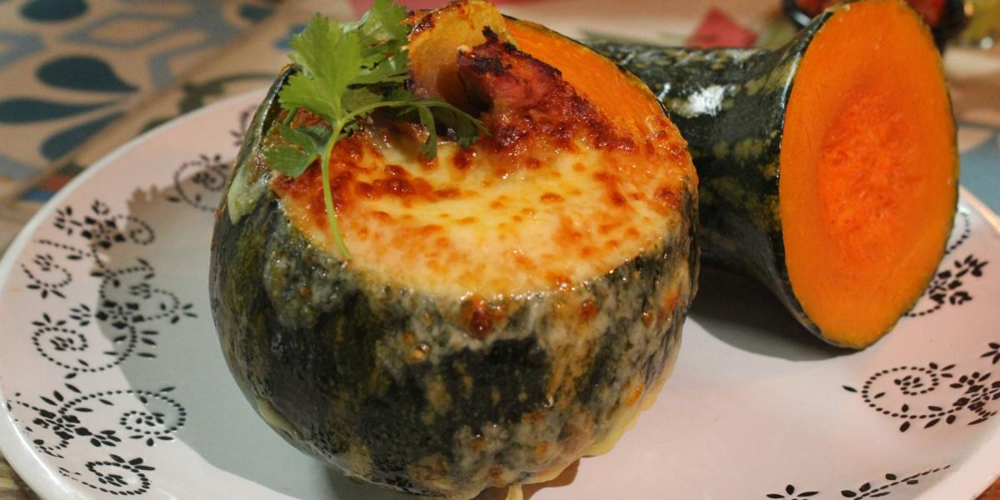
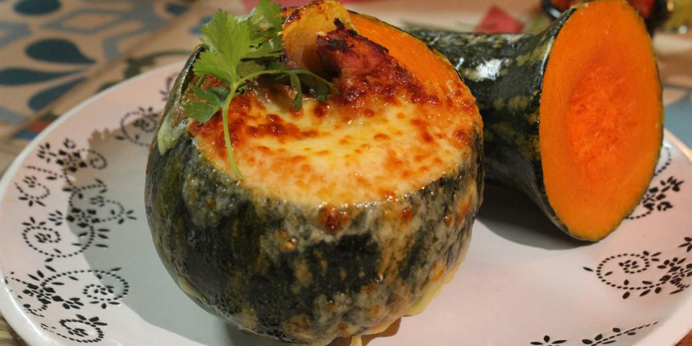

Turismo Araucano
Arauca, en la región de la Orinoquía de Colombia, ofrece una variedad de atractivos turísticos que combinan naturaleza, cultura y aventura. A continuación, algunos de los lugares más destacados que puedes visitar en este departamento:
- Sierra Nevada del Cocuy: Este majestuoso parque nacional es ideal para los amantes del senderismo y la escalada. Sus picos nevados y paisajes impresionantes lo convierten en uno de los destinos naturales más importantes de Colombia.
- Puente Internacional José Antonio Páez: Este puente conecta Colombia con Venezuela sobre el río Arauca. Además de su importancia estratégica, ofrece vistas panorámicas del río y es un símbolo de la hermandad entre ambos países.
- Acuaparque Las Toninas: Ubicado en la capital, Arauca, este parque acuático es perfecto para disfrutar en familia. Cuenta con piscinas, toboganes y áreas recreativas que garantizan diversión para todas las edades.
- Parque Simón Bolívar: Situado en el corazón de Arauca, este parque es un punto de encuentro para locales y visitantes. Sus jardines y monumentos ofrecen un espacio ideal para el descanso y la reflexión.
- Malecón Ecoturístico de Arauca: A lo largo del río Arauca, este malecón ofrece agradables vistas y es perfecto para caminatas al atardecer. Es un lugar emblemático donde se puede apreciar la belleza natural de la región.
- Fincas Ganaderas: En las vastas sabanas de Arauca, es posible visitar fincas ganaderas para conocer de cerca las faenas del campo y la cultura llanera. Estas experiencias permiten al visitante sumergirse en las tradiciones y el estilo de vida de los llaneros.
Estos destinos reflejan la riqueza cultural y natural de Arauca, ofreciendo a los visitantes una experiencia única en el corazón de los llanos orientales de Colombia.
Comida Típica
La gastronomía de Arauca, ubicada en la región de los Llanos Orientales de Colombia, es un reflejo de su riqueza cultural y natural. A continuación, se destacan algunos de los platos y bebidas más representativos del departamento:
- Hallacas: Similares a los tamales, las hallacas son preparadas con masa de maíz rellena de carnes, vegetales y condimentos, envueltas en hojas de plátano y cocidas al vapor.
- Pisillo de pescado: Este plato consiste en pescado desmenuzado y guisado con especias locales, ofreciendo un sabor auténtico de la región.
- Carne asada: La ganadería es fundamental en Arauca, lo que se refleja en su tradición de asar carne de res al aire libre, resaltando el sabor natural de la carne.
- Chigüiro al horno: El chigüiro, el roedor más grande del mundo, es típico de los llanos y se prepara asado, ofreciendo una carne tierna y jugosa.
- Capón de ahuyama: Plato elaborado a base de ahuyama (calabaza) rellena con una mezcla de arroz, carne y especias, luego horneada hasta alcanzar una textura suave y un sabor delicioso.
Estos platos on una muestra de la diversidad culinaria de Arauca, influenciada por su entorno natural y las tradiciones de sus habitantes.
 

Sector económico Araucano
El departamento de Arauca, posee una economía diversificada con énfasis en varios sectores clave. Estos sectores reflejan la estructura económica de Arauca y los retos que enfrenta para diversificar su economía y reducir la vulnerabilidad a factores externos:
- Explotación Petrolera
- Ganadería
- Agricultura
- Comercio y Servicios
- Minería
Es importante señalar que la dependencia económica de Arauca en la industria petrolera lo hace susceptible a choques externos, como la caída de los precios del petróleo y cambios en las políticas de regalías. Además, la proximidad con Venezuela ha generado desafíos adicionales, incluyendo el contrabando y la inmigración, que impactan en la dinámica económica y social del departamento.